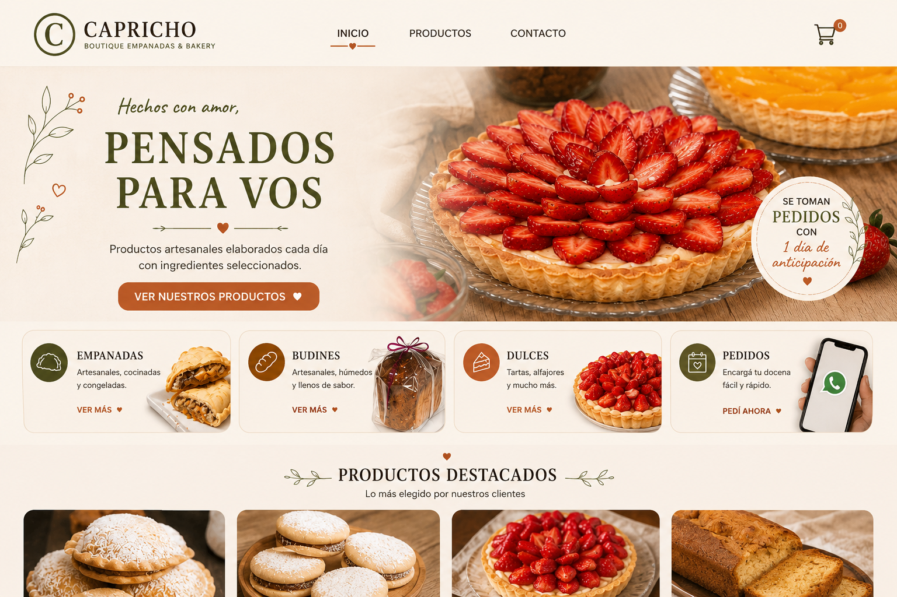
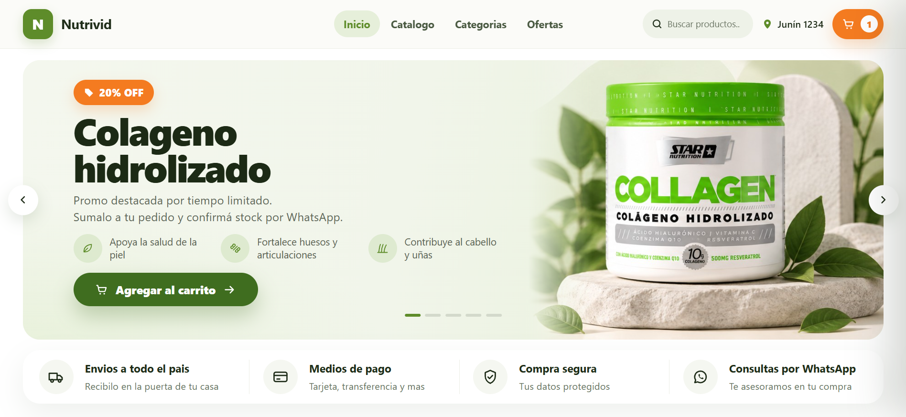
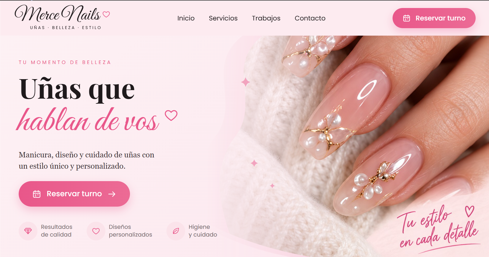

Capricho
Sitio web para un emprendimiento gastronómico con catálogo de productos, pedidos por WhatsApp y panel de administración.
Desarrolladora de software
Estudiante avanzada de Desarrollo de Software. Hice tiendas online, un gestor de turnos y un dispensador IoT para mascotas.
Proyectos destacados
Algunos de los proyectos en los que he trabajado, utilizando distintas tecnologías y resolviendo problemas reales.
Ver todos los proyectos →
Sitio web para un emprendimiento gastronómico con catálogo de productos, pedidos por WhatsApp y panel de administración.
Sistema de gestión académica para cursos, estudiantes, profesores, asistencias y entregables.
Aplicación web tipo playground para practicar código, con ejercicios y validación en tiempo real.

Tienda online desarrollada para una dietética con múltiples sucursales, pensada para facilitar la consulta de productos y la realización de pedidos de forma rápida y sencilla.

Sitio web para un emprendimiento de servicios de uñas con un sistema de gestión de turnos que permite a las clientas reservar, cancelar y recibir recordatorios, mientras la profesional administra su agenda desde un panel privado.
Proyecto académico basado en ESP8266 que integra hardware + firmware + interfaz web embebida, diseñado para calcular y dispensar porciones de alimento de manera automática y precisa.
Tecnologías
Estas son algunas de las tecnologías y herramientas con las que trabajo en mis proyectos.

Sobre mí
Soy estudiante de la Tecnicatura en Desarrollo de Software y me apasiona crear, aprender y transformar ideas en soluciones reales.
Me interesa especialmente el desarrollo web, la creación de proyectos útiles y seguir creciendo en el mundo de la tecnología.
Actualmente estoy buscando oportunidades para seguir desarrollándome profesionalmente y formar parte de proyectos desafiantes.
Contacto
Si tenés alguna propuesta o consulta, podés escribirme.